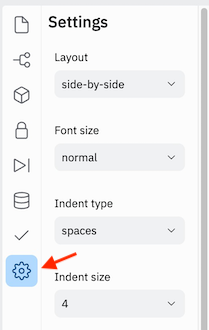

Replit
Contents
Replit#
Replit is a fast and free way to get you up and running with a development environment, a place to write and execute code. It provides all the tools you need to create Python programs right from your web browser.
It avoids a lot of the typical pain of setting up a coding environment and it is also cloud based so you can log in from any computer to view your code. Additionally, it provides tools for real-time collaboration which can be used for coding lessons, demos, feedback, and getting help with your code.
Table of Contents
Part 1: Getting Started#
Part 1.1: Prerequisites#
Since Replit is a web application it won’t matter whether you have a Mac or Windows or even Linux computer. You won’t need to install or set up anything on your local computer.
All you need is a computer with:
Part 1.2: Sign up#
Go to Replit and create an account. NOTE: You will have to check your email and activate your account before you can sign in.
Once you have confirmed your email and signed in, click on the + Create button at the top of the left sidebar. You should be prompted to create your first project aka developer environment, which is referred to on this site as a Repl.
Choose “Python” as your template. You can rename your project to anything you like or keep the one that was generated for you.
Click + Create Repl.

Now you have a powerful, cloud-based development environment that comes pre-installed with Python!
Part 1.3: The IDE#
A IDE or integrated development environment is a program that consolidates several development tools wrapped up together into a unified user interface. Lets take a quick tour of the Replit IDE.
# |
UI Element |
Description |
|---|---|---|
|
Sidebar |
by default it shows the File Browser |
|
Code Editor |
where you will write and edit code |
|
Console |
this is where you’ll see your code in action |
|
Run button |
click this to run your program |
|
Menu bar |
icons to switch the Sidebar to a different tool |
You’ll probably spend most of your time writing code in the (1) editor,
running it using the (4) run button, then looking at the result in the (3)
console.
See also
Part 1.4: Running Python#
Now we’ll write our first line of code and run it.

In the editor add the following:
1print("Welcome to PyPet!")
Click the Run button. The console will output:
Welcome to Pypet!.
You’ve just written your first line of Python!
Part 1.5 Settings#
Click the gear icon at the bottom of the sidebar to change your settings.
These are the settings I strongly recommend for Python programming.
Setting |
Value |
Meaning |
|---|---|---|
Indent Type |
|
Use spaces instead of tabs for indenting |
Indent Size |
|
Number of characters in one indentation |
Wrapping |
|
Don’t wrap text |
Code Intelligence |
|
Disable noisy typing suggestions. (Having to remember and type helps you learn) |
Part 1.6: Share your code#
To give your teacher and fellow students access to your project you’ll need to invite them to join you in “multiplayer” mode.
Click the Invite button on the right side of the top-bar.
A dialog box will pop up. Copy the join link at the bottom.
Send the link to whomever you wish to invite, or just post it in the Discord sharing-work channel for your class.
Once granted access, collaborators will be able to see each-other type in real-time. Below is the main Replit account on the left and a second account which opened the multiplayer invite link on the right.

See also
Part 2: New scripts#
We’ll be creating lots of scripts during our lessons. Each script will be in a different file.
When a new Python project is created in Replit, it has one file by default,
main.py, and the Run button is all set up to run it. When
it comes time to add another file, we’ll have jump through a couple of hoops to
get it all running smoothly.
Part 2.1: Add the file#
Click the Files icon at the top of the sidebar that looks like a page. The Files pane will open with a list of your files.
At the top of the Files pane on the right side, click the Add file icon that looks like a page with a +.
A new line will appear in your file list. Type a name for the file then hit enter. The name should have no spaces, use underscores as separators, and end in “.py”.
For example
my_script.py.
Part 3: Using Git#
Part 3.1: Introduction#
Version control refers to a system for keeping track of and managing
changes to a set of files. The most popular version control system today is
git, which is what we will be using.
Version control can be used for any text-based files (school work, essays, books, manuals) but in software we’re tracking changes to code and we refer to the group of source code files for any particular project as a codebase. The set of version control data for a codebase or other group of of files is called a repository or repo.
Version control can take a bit of getting used to, but it is one of those life-changing tools that you’ll wonder how you ever lived without. Some of the benefits include:
Keep a remote backup of all of your work.
Easily see what changes you have made since you were last working on a file.
Review an older version of your work, or revert back to it.
Github is a service that provides hosting for git repos. Replit has an integration with Github that tucks away a lot of the complexity behind a web interface.
Part 3.2: Quickref: Review, Commit & Push Steps#
Reviewing your changes then committing and pushing them is kind of like a fancy
ctrl+s–that is, a best practice to get in the habit of doing so regularly
that it becomes automatic. This process should happen at the end of any
significant change and definitely before you walk away from your code. You can go
to bed angry, just don’t go to bed without committing and pushing your code.
Here are the steps to follow in Replit.
In the Console
git status: Review which files have changed to make sure there is nothing unexpected.git add .: Stage all changes.git status: Sanity check to ensure that all changes are now staged.git diff --staged: Review your changes to check for mistakes. Make any necessary change then repeat from step 1.
In Replit
Commit & Push : In Replit:
Click the
 Version Control link in the left-nav.
Version Control link in the left-nav.Add a brief description of your changes in the What did you change? text area.
Click commit & push.
Part 3.3: First Create a Github Account#
Create an account on Github.com or sign into your existing account.
Part 3.4: Connect it to your Replit#
Open your your Replit repl.
On the left side-nav click the second icon down:
Version Control.At the top of the new left-most pane, click the button that says Connect to…
It will ask you to Connect to Github. Click the button that says Connect Replit to your GitHubAccount
A new page will appear titled Install & Authorize Replit Online IDE. Click Save.
The new window will close and you’ll be back at your repl. Click the Connect to… button again.
A dialog will appear titled Create a new GitHub repository. Choose a repo name (perhaps “python-class”?) and click Create GitHub repository.
Part 3.6: Review your changes#
The web interface does not include any features to review your changes, so we’ll have to use the command line.
(This gives you a chance to get a feel for the benefits of using version control. But you can skip it for now if you’d prefer.)
Use git status
The git status tool shows you a list of files that have been changed since
your last commit.
In the Console
In the right-most Console pane, type:
> git status
You will see a list of the files that have been changed since your last commit. It will look something like this.
> git status
On branch master
Changes not staged for commit:
(use "git add <file>..." to update what will be committed)
(use "git checkout -- <file>..." to discard changes in working directory)
modified: main.py
Untracked files:
(use "git add <file>..." to include in what will be committed)
.replit
no changes added to commit (use "git add" and/or "git commit -a")
Use git diff
The git diff tool shows the details of what you have changed.
The diff tool only shows changes to tracked files–ones that have been
previously added to your repository. To make sure that all of your changes show
up in the diff, we’ll first need to add them.
** In the Console**
In the Console pane type:
> git add .
> git status
You will now see that all files with changes are listed under “Changes to be committed:”
> git add .
> git status
On branch master
Changes to be committed:
(use "git reset HEAD <file>..." to unstage)
new file: .replit
modified: main.py
When a file is staged for commit, that means that it has been chosen to be
included in the commit.
Now you can use the diff tool with the --staged flag to review all of the
changes you’ve made since your last commit.
In the Console pane type:
> git diff --staged
This command will show you a diff of your changes–that is, the chunk of changes from each file that was changed.
> git diff --staged
diff --git a/.replit b/.replit
new file mode 100644
index 0000000..1acc15c
--- /dev/null
+++ b/.replit
@@ -0,0 +1 @@
+run = "python3 main.py"
\ No newline at end of file
diff --git a/main.py b/main.py
index e69de29..051463d 100644
--- a/main.py
+++ b/main.py
@@ -0,0 +1 @@
+print("hello python class!")
\ No newline at end of file
If you notice anything you want to change before you commit and push you can go
and edit the file then repeat the git add and git diff steps to review it
again.
Part 3.7: Commit & Push Your Code#
In git a commit is a record of a set of changes. The repository for your code exists both on repl.it and on github. In order to update the repo on github with your commits on repl.it the changes will be pushed to Github.
On the left side-nav, Click the
Version
Control icon again. In the left-most Version Control pane, it should
now display a link to your newly created repository next to the github icon.In the text-area that says What did you change? write a brief description of your changes. (If this first commit is a lot of files, you may want to put something like
First push from repl.it. In the future, it’s a good idea to commit frequently, ideally at logical stopping points.)Click the commit & push button. If all goes well, your new commit will appear under Previous Commits and the commit & push button will disappear.
Congratulations!#
You’ve successfully created a git repository, reviewed your changes, committed them, and pushed them to github!
Reference#
Glossary#
Software Development#
- development environment#
- dev env#
A workspace to write and execute code. It’s comprised of a collection of processes and tools used to develop the source code for a program.
It often consists of:
an editor to create or change code
a debugger for troubleshooting
the programming language that runs the code
source control for keeping track of changes
the tools and processes for testing code
the tools and processes for releasing changes to the current public version
Not to be confused with an integrated development environment (IDE), a program that consolidates several of these tools in one application.
- source code#
The human-readable text written in a specific programming language. Often used to mean the collection of source code files that make up a particlar project or piece of software.